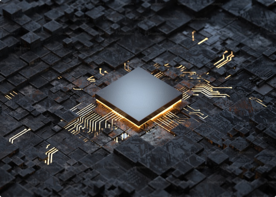

HOME

Nanoprocessador é um microprocessador com baixo custo e alta potência. O nanoprocessador oferece flexibilidade na função de processamento, ocupando menos espaço e permitindo a integração de novas tecnologias. Sua estrutura microscópica atribui baixo consumo de energia, ao mesmo tempo que, de forma inteligente, realiza trilhões de tarefas dentro de um único segundo em um poder de processamento nunca visto antes.